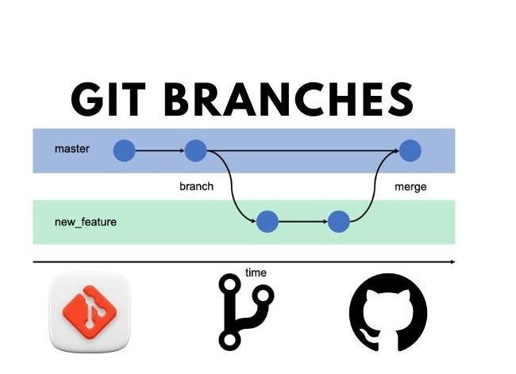

What is the purpose of Wireframes?
Wireframes are visual representations of a website's layout and structure. They are used in the planning stages of a project to establish the basic design and functionality.
Learn more about Wireframes
A README file introduces and contains brief information about a project. It typically includes instructions on how to install, use, and contribute to the project.
Learn more about README filesWireframes are visual representations of a website's layout and structure. They are used in the planning stages of a project to establish the basic design and functionality.
Learn more about Wireframes
A branch in Git is a separate line of development. It allows you to work on new features or bug fixes without affecting the main project. Once the work is complete and tested, you can merge the branch back into the main branch.
Learn more about Git branches